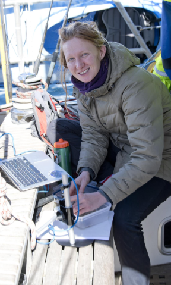
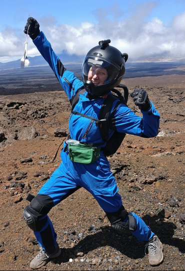
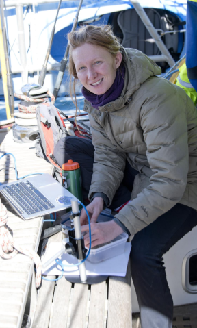
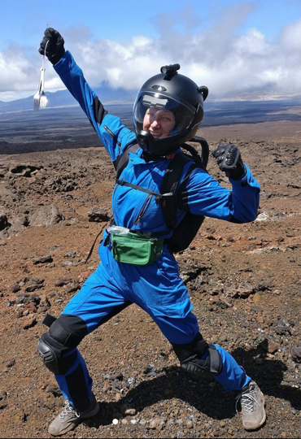
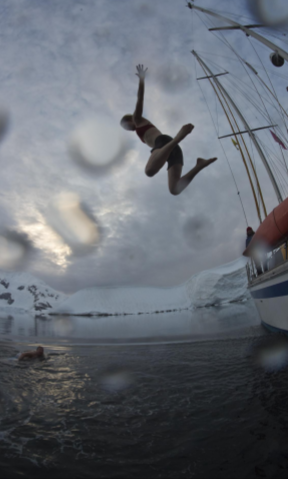
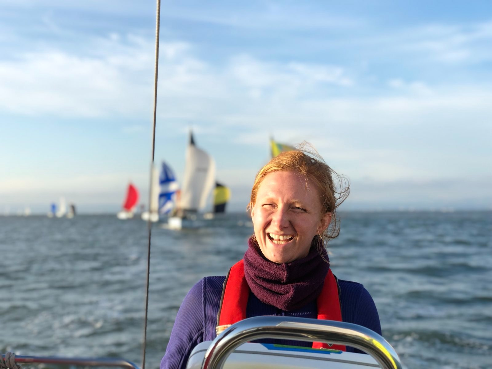

Jessica E. Snyder
Engineer, Inventor, Explorer
Hello. I use engineering principles to understand nature for the purpose of conservation. This has led me to work on a broad range of projects - from 3D printing human cells for tissue engineering to studying sea sponge for closed loop wastewater treatment aboard the International Space Station. My approach to research follows a consistent arc - use the power of observation to gain scientific understanding and then apply that understanding for conservation. Many of those projects are presented on this website. Each endeavor has given me humility, enthusiasm, and a deeper conviction that humanity already has many of the answers we seek.
My favorite media
Around Cape Horn, Captain Irving Johnson, 1929
Mr. Dial Has Something to Say, PBS, 2013
Autobiography of a Yogi Chapter 6: The Tiger Swami, Paramhansa Yogananda, 1946
Weekly Science Podcast, AAAS
Hopecast, Jane Goodall Institute
https://www.windy.com, Real time global wind patterns
Astronomy Picture of the Day, NASA
Interviews
Engineering for Patients in Need “to the Moon & Back”, RoosterBlog, Life At the Roost, 2022
Biohackers in Space (Almost), proto.life, 2021
Moon Mission Begins on Mauna Loa, Big Island Gazatte 2020
the evolver, epoque evolution journal, 2019
40 Under 40, Drexel Magazine, 2019
Mind the Gap, MIT Senseable City Lab, 2019
Scientists look to synthetic biology and 3D printing for life support in space, MIT Lincoln Lab, 2019
Can studying sewage reveal new insights about public health?, PBS NewsWeekend, 2016
Drexel engineers 3D-print tumors, WHYY PBS, 2014
Sharing Invaluable Lessons Learned from Interning at NASA, NSBRI Summer Internship, 2010
Authored blogs
The Sun Never Sets on a World Spinning with hMSC Advanced Therapeutics,
RoosterBio Blog 2022
The hMSC Standard in the Ivory Tower,
RoosterBio Blog, 2021
What happens when astronaut teams don’t get along?,
Sciworthy, 2021
Online profiles
Google Scholar:
Google Scholar Profile
Scopus 56007982800:
Scopus Metrics Overview: 56007982800
Github:
https://github.com/jesnyder
LinkedIn:
https://www.linkedin.com/in/jessica-snyder-2baa0516
ResearchGate:
https://www.researchgate.net/profile/Jessica-Snyder-2
 



 
Website code repo:
https://github.com/jesnyder/myWebsite